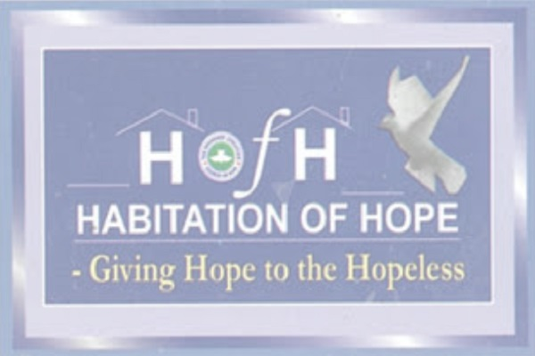
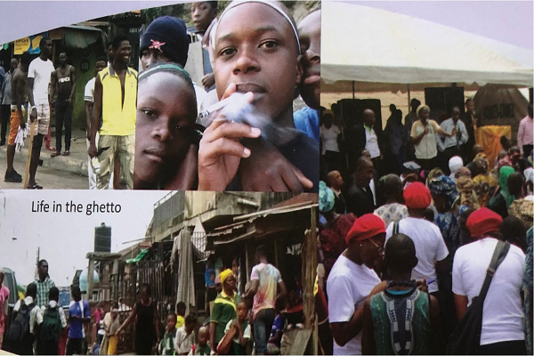
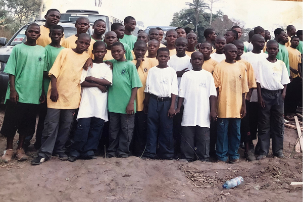
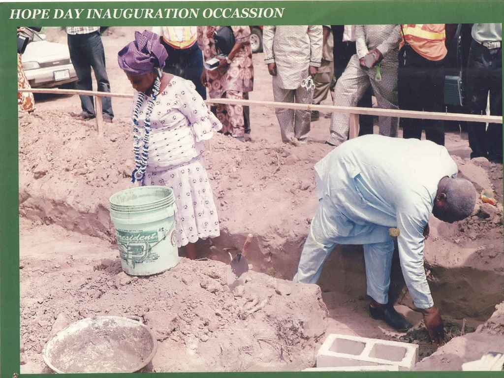
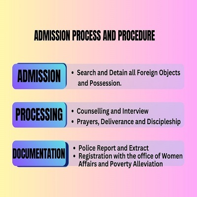
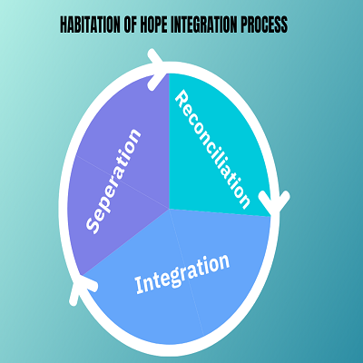
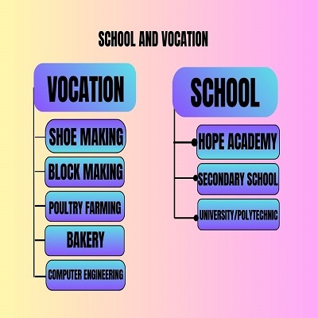

About Us
Sometimes in the year 2004, I heard God asked me to go to Kuramo beach, then I was at the National headquarters, Ebute- Meta. I was serving as a parish pastor with an evangelical calling.Read more...

Our Aim
Is to salvage, transform and empower destinies of the lost boys committed to our care.

Our Vision

Historical Background
"Sometimes in the year 2004, I heard God asked me to go to Kuramo beach, then I was at the National headquarters, Ebute- Meta. I was serving as a parish pastor with an evangelical calling. I called my prayer partner then, Dr. Remilekun Williams who accompanied me to Kuramo beach (apparently she lives in Ikoyi).
Once we got there, we met a lot of Children in the ghetto of the Kuramo waters. It was a deadly place. After about one and a half years of going to speak with these Children, we brought them to come and meet with our Mother-in–Israel, Mummy GO (Pastor Mrs. Folu Adeboye) to let her know there are some boys God has committed into our care but could not afford to take off. We were given a big and unexpected assistance over the boys.
Mummy GO said God had already given her the vision of the ‘’Street’’ more than 10 years before then, but didn’t know this is the way it will become a reality. This was the experience that birthed Habitation of Hope International Ministry".
How It All Started
The habitation of Hope started with a simple instruction, a call to service, to minister the gospel to the destitute at Kuramo beach, to the glory of God, the ears and hearts that were prepared for the good news were so numerous that the occasional visit became weekly and also demanded a lot of attention and resources which gave birth to constant fellowship.
The cases that were encountered required urgent response as a lot of these street boys complained of the strain in their daily life which if continued would lead them to only one direction (destruction). It was a cry for help and we know God wouldn’t give instructions without provisions, and the question was how to proceed.
Our mother- in- Israel, Pastor Mrs. Folu Adeboye after being introduced to the boys, and told of their need for a better life, gave a grand reception and requested that they not be returned to Kuramo beach, but rather have an accommodation made ready for them that would ensure they are being constantly taught the bible principles and some form of basic education. This happened in the year 2006 with a total of 20 boys.
Weekly Outreaches and Evangelism.
Counselling/Fact-finding process about their Parents, and why they are in the streets.
- * The wards must be searched and have any contraband or harmful objects seized.
- * They must be cleaned up (haircut, shaved, bath) and have any pending medical issues attended to.
- * They will be separated from the old wards in order to enable them acclimatize to the new environment.
- * Constant prayers and study of God’s word is introduced to them daily.
- * Counselling and interview is done to ascertain their background, and whatever form of challenge they may be encountering.
- * Regular deliverance program.
- * All wards must have a file containing extracts from their counselling and prayer sessions, all their verifiable accounts during their counselling sessions, police extract, passport photographs, and medical data.

SEPERATION PROCESS
The wards are kept separate from the old ones to:
- * Prevent the new intakes from being negatively influenced by the old boys.
- * Ensure that the new wards depending on their size are protected from the old wards.
- * Enable a subtle transition and acclimatization.
- * Prevent any spiritual vice.
INTEGRATION
- Based on all observation and classification, the wards are then fit into the various classes and hostels after they have been deem fit to interact fully with other wards.
RECONCILIATION
-
The wards may, or may not be reconciled with their parents, based on our fact-finding on the background of the Parents:
- * Whether they are responsible or not.
- * Whether the Parents are willing to accept them back or not.
- * If both Parents or One of the Parents is still alive.
- * The ward may not be willing to be reconciled to the Parent.
- * Whether the Parents are capable of funding their Education.

The vocation center was created by Pastor Mrs. Folu Adeboye by the grace of God, and with the assistance of the Lagos State Government. The aim is to reach out to the wards that are academically challenged. The Vocation center was launched in February 2013, and it offers the following vocations:
- * Block making
- * Aluminium fabrication
- * Welding and iron fabrication
- * Computer engineering
- * GSM engineering
- * Poultry farming
- * Crop farming
- * Bakery and confectionery
- * Tailoring
- * Photography
- * Leather work (Shoe making)
Each of these departments are equipped to empower these wards with the highest form of craftsmanship and professional discipline in their trades.
-
The academically challenged wards are allowed to study till J.S.S certificate examination, after which they will be encouraged to pursue any vocation of their interest. The vocation department also avails them the opportunity of taking some nationally recognised skill trade test certification examination if they desire to do so.

Testimonials
MEET OUR TEAM
Pst (Mrs) Folu Adeboye (Mummy G.O)
VisioneerBlessed with the rare gifts of administration, planning, hospitality, counseling, mentoring, ministering comfort, care, and encouragement to many, bringing hope, love and succor to the hopeless. Endowed with immense initiative, and great capacity for hard work. A missionary and minister of the gospel of Jesus Christ. A powerful intercessor, Bible Teacher & role model for lots of women. A pioneer of multiple projects, ministries and missions to the Glory of God.
With a passion for planting Christian schools, has made immense contributions to the Nigerian Education sector, coordinating work in the field of Christian Education, by starting a vigorous movement (Christ the Redeemer’s Schools Movement) that has led to the founding of several Christian Educational institutions caring for the educational welfare of children in Nigeria and Internationally. A dutiful wife, a devoted mother and grandmother, a tireless evangelist, a hospitable and seasoned teacher with passion for excellence at all levels of education.
Mr. Olukayode A. Pitan
Former Managing Director/Chief Executive Officer,
Bank of Industry.
Mr Olukayode Pitan served as the Managing Director and Chief Executive Officer, Bank of Industry Ltd, Nigeria, between May 2017 and October 2023. His experience cuts across various financial services sectors including banking and capital markets, during his over 30-year career. As an astute corporate and investment banker, he was the pioneer Managing Director of ENSEC which at that time was the flagship specialized Banking unit of FSB Int’l Bank Plc focusing on the Energy Sector in Nigeria. He graduated with a B.Sc. (Hons) Degree in Economics as a UAC scholar from the University of Ibadan in 1982 and obtained a Master's Degree in International Management as a Rotary International Scholar from the American Graduate School of International Management, Thunderbird Campus at Glendale, Arizona. He is a Fellow of several prestigious organisations including the following: Chartered Institute of Bankers of Nigeria (FCIB), Chartered Institute of Stockbrokers (FCS), Institute of Credit Administration of Nigeria (FICA), Nigeria Economic Society (FNES) and a member of the Institute of Directors of... Read more...
Pastor Michael Aderibigbe was born on April 3, 1962, into the Muslim family of Chief and Mrs Lawani Aderibigbe. His journey reflects a life of excellence, dedication, and transformation, spanning sports, leadership, and spiritual service.
Early Life and Education:
Pastor Aderibigbe began his educational journey at Arabic School in Oyo (1969–1970) before transitioning to St. Andrew’s Demonstration Primary School (1971–1977). He proceeded to Alaafin High School, Oyo, where he graduated in 1984. During these formative years, he excelled in athletics, representing Oyo State in the National Sports Festival.
In 1986, he gained admission to the University of Ife (now Obafemi Awolowo University), where he continued his athletic pursuits. He represented the university at the Nigerian University Games (NUGA), breaking a decade-old track and field record and securing multiple gold medals.
His accomplishments earned him a spot on Nigeria’s National Athletics Team in 1987, where he proudly represented the country in track and field events.
Career in Sports...
Read more...
CONTACT US